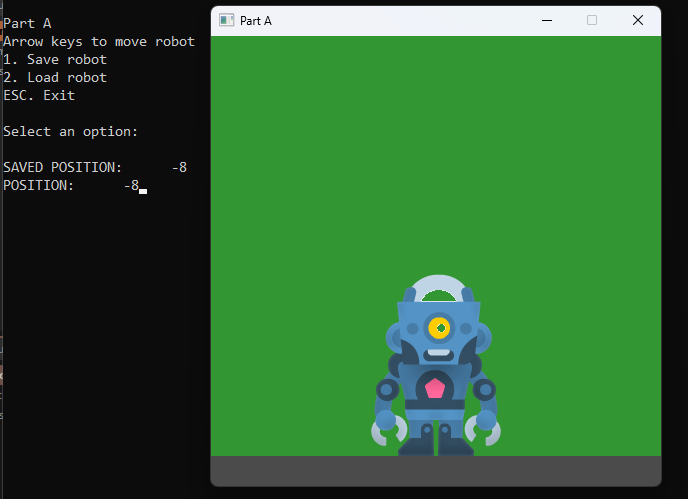

📘 Writing CSV Data Using `ofstream` in C++
- 🧾 Overview
- Basic Steps for File I/O
- 🛠️ Basic Example
- 🧠 Key Concepts
- ⚠️ Common Pitfalls
- ✅ Best Practices
- Practice it!
🧾 Overview
In C++, the ofstream class (from the <fstream> header) is used to write data to files. To write CSV (Comma-Separated Values) data, you simply write text to a file with values separated by some delimiter (usually commas) and rows separated usually by newline characters.
This approach is manual but flexible, allowing you to control formatting, quoting, and delimiters.
Basic Steps for File I/O
There are 3 basic steps required for input/output:
Step 1. Open the file
Things to consider when opening a file...
- Where is the file?
- There are 2 kinds of paths to files:
Full Pathcontains the drive + directories + filename.NOTE: you will rarely use full paths in your code
Example:c:\temp\Sample\Config\UIConfig.csvRelative Patha path that is relative to the current working directory...in the relative path means to move up a folder.in the relative path means current directory
..\..\Sample\Config\UIConfig.csv
- If NO path is specified on the filename, then the current working directory is used.
- There are 2 kinds of paths to files:
- What mode to open the file in?
- Are you opening the file to read or write or both?
- Are you opening the file in binary mode or text mode?
ifstreamopens the file for text input (reading) by default.ofstreamopens the file for text output (writing) and will overwrite the file by default.
- Making sure to check if the file is open
- Use the stream's
is_open()method to make sure the file is open before trying to read/write the file.
- Use the stream's
std::ofstream file("students.csv");
if (file.is_open()) {
// File is ready to write
}Step 2. Write to the file
- Use the stream's
<<insertion operator to write data to the file. - Be sure to separate each piece of data with the delimiter.
file << "Alice,21,Computer Science\n";
file << "Bob,22,Mathematics\n";
file << "Charlie,20,Physics\n"; Step 3. CLOSE the file
Always ensure that the file is closed. Call the stream's close() method to explicitly close the file.
A good rule to follow is to close the file AS SOON AS POSSIBLE. Since file handles are system resources, you'll want to release the resource back to the OS as soon as possible.
file.close();🛠️ Basic Example
🧱 Required Headers
#include <iostream>
#include <fstream>
#include <string>Writing a Simple CSV File
int main() {
std::ofstream file("students.csv");
if (file.is_open()) {
// Write header
file << "Name,Age,Major\n";
// Write data rows
file << "Alice,21,Computer Science\n";
file << "Bob,22,Mathematics\n";
file << "Charlie,20,Physics\n";
std::cout << "CSV file written successfully.\n";
} else {
std::cout << "Failed to open file.\n";
}
file.close();
return 0;
}Output (`students.csv`):
Name,Age,Major
Alice,21,Computer Science
Bob,22,Mathematics
Charlie,20,Physics🧠 Key Concepts
1. Comma Separation
Each field is separated by a comma. You must ensure that fields containing commas or quotes are properly escaped.
2. Looping Through Data
You can use loops to write data from arrays, vectors, or other containers.
std::vector<std::tuple<std::string, int, std::string>> students = {
{"Alice", 21, "Computer Science"},
{"Bob", 22, "Mathematics"},
{"Charlie", 20, "Physics"}
};
for (const auto& [name, age, major] : students) {
file << name << "," << age << "," << major << "\n";
}⚠️ Common Pitfalls
- Forgetting to close the file (
file.close()) - Not checking if the file opened successfully
- Not escaping special characters in fields
- Using incorrect delimiters (e.g., semicolons instead of commas)
✅ Best Practices
- Always check if the file is open before writing.
- Use
std::quotedfrom<iomanip>for automatic quoting (C++14+). - Consider using a CSV library for complex use cases (e.g., Fast C++ CSV Parser).
💻 Practice it! Writing CSV Files
🧩 Part A-2 SavePosition
- Open the
Day10.cppfile. - Add code to the
SavePositionmethod. - Open the file for output.
- If the file is open:
-
To the file, save the word "position" followed by the
worldX. Make sure to separate them by the delimiter. - Print to the console "SAVED POSITION: " and the
worldX.
-
To the file, save the word "position" followed by the
- Else:
- Print the file could not be opened.
- If the file is open:
- Close the file.
- Run menu option
2. Write CSV fileto test your code.
🎯 Result
